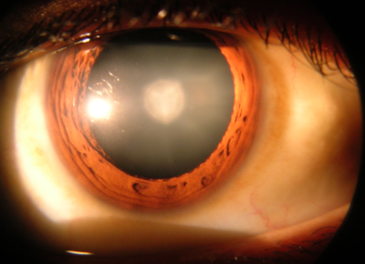

Cataract
Cataract diagnosis, modern laser phacoemulsification surgery and intraocular lens (IOL) options — evidence-based care with fast recovery and compassionate support.

What is a Cataract?
Clouding of the eye’s natural lens that progressively blurs vision — common with ageing but can affect younger people too.
The lens inside the eye focuses light on the retina to produce clear images. Over years (or sometimes rapidly), insoluble proteins can cloud the lens and cause hazy vision — this condition is called a cataract. No diet, medicine or exercise prevents cataracts; regular eye checks ensure early detection and timely treatment.
Signs & Symptoms
- An increasing glare in sunlight or at night (difficult driving).
- Hazy or blurred vision and difficulty reading small print.
- Double vision or image distortion in one eye.
- Perception of unequal brightness between eyes.
- Frequent changes in spectacle prescription.
- Poor depth perception (difficulty with stairs).
Common Causes
- Ageing (most common).
- Eye injury or trauma.
- Metabolic illnesses like diabetes.
- Infection or chronic inflammation of the eye.
- Prolonged steroid medication.
- Congenital cataract (present at birth) or strong family history.
- Secondary to glaucoma or chronic inflammation.
Treatment Overview
Surgery is the only effective treatment. Modern phacoemulsification (laser-assisted when chosen) allows removal at any stage — earlier intervention when the cataract is soft yields easier surgery and faster recovery.
How is Cataract Surgery Performed? (Laser Phacoemulsification)
At Maa Nursing Home and NetraJyoti Eyecare Centre we offer advanced micro-incision phacoemulsification. The cloudy lens is broken into tiny pieces using ultrasonic energy and aspirated through a 1.5–3 mm incision (often stitchless). The natural lens is replaced with a clear synthetic intraocular lens (IOL). The procedure is a day-care surgery (often 5 minutes) under topical anaesthesia (eye drops) with quick recovery.
Femto LASER-Assisted Cataract Surgery (FLACS)
FLACS is a bladeless, automated step that increases precision — patients often experience faster recovery and excellent visual results. Both standard phaco and FLACS are available depending on clinical need and patient preference.
Intraocular Lenses (IOL) — Types
Toric Lens
Designed to correct corneal astigmatism so many patients avoid glasses for distance vision.
Multifocal Lenses
Available as bi-focal and tri-focal IOLs to reduce dependence on spectacles for distance and near tasks.
EDOF Lens (Extended Depth of Focus)
Creates an elongated focal range to improve intermediate vision with fewer visual disturbances than some multifocal lenses.
Do You Need Spectacles After Surgery?
Many patients still require reading glasses for near tasks. With premium IOLs (multifocal, toric or EDOF), spectacle dependence can be greatly reduced. Most patients resume routine work within 2–3 days.
Post-Operative Care
- Use prescribed eye drops & medications exactly as instructed.
- Wear sunglasses outdoors to protect from sunlight and dust.
- Maintain eye hygiene; do not rub or scratch the eye.
- Avoid water, dust and pollution entering the eye for ~1 month; no head baths for 5 days.
- Attend scheduled follow-ups for vision checks and IOP monitoring.
Advantages of Phacoemulsification
- Stitchless, micro-incision operation (minimal cut).
- Faster healing and early return to work.
- Less ocular trauma and reduced infection risk.
- Topical anaesthesia (drops) — safe for most patients.
- Better night and low-light vision with good quality IOLs.
Why Choose Us?
- Advanced Phaco & Femto LASER options
- Experienced surgeons with excellent safety record
- NABH & ISO accredited facility
- Government-approved Keratoplasty centre
Quick Facts
Ready to Book?
Book Cataract ConsultationComprehensive Evaluation
Full pre-operative workup including OCT, lens calculations and IOL counselling.
State-of-the-art Equipment
High-quality phaco machines and femtosecond laser for precise surgeries.
Post-op Support
Dedicated follow-up, vision rehabilitation and counselling for glare/contrast issues if needed.